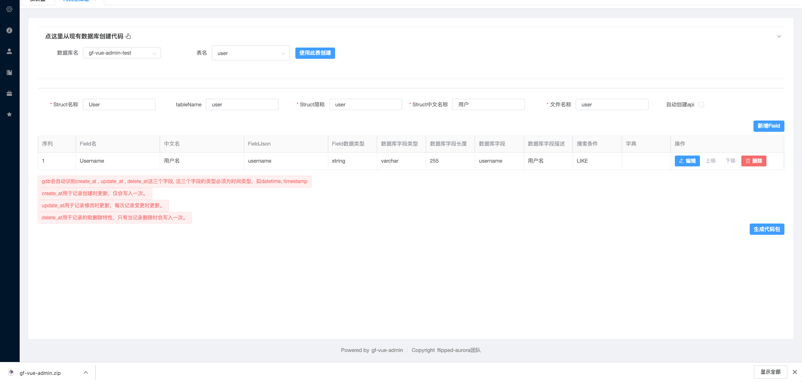

GFVA小白说明书
1. 目录结构
2. 实战基础操作
本项目的编程环境
| 推荐 | 开发环境(指的是开发此项目的开发环境) | |
|---|---|---|
| Golang | 1.11 | 1.14.4 |
| MySQL | 8.0 | 8.0.19 |
| nodejs | 最新的LTS | 12.16.1 |
2.1 下载或克隆项目
git clone https://github.com/flipped-aurora/gf-vue-admin.git
2.2 安装依赖
2.2.1 前端项目下载依赖
// 进入web文件夹
cd web
// 使用npm或者cnpm进行下载依赖
cnpm i || npm i
2.2.2 后端项目下载依赖
# 注意不要使用gopm
# 开启go module
go env -w GO111MODULE=on
# 设置代理
go env -w GOPROXY=https://goproxy.io,direct
2.3 初始化
2.3.1 数据库初始化数据
- 新建数据库,名字自取.
- 将server/document/gf-vue-admin.sql导入到新建的数据库
2.3.2 server的配置文件
- 配置文件位于server/config
- 按需修改config.toml文件
- 如需详细的配置文件,点我
3.前端项目
- 前端是Vue项目
- 使用VsCode或者WebStorm打开web文件夹
- 使用
npm run serve或者cnpm run serve即可启动项目
4.后端项目
- 后端是Golang项目
- 使用VsCode(需要自行下载VsCode的go开发插件)或者Goland打开server文件夹,
以Goland为例进行说明 - 进入GoLand的File → settings → Go → Go Modules，将 Environment 项的值设置为
GOPROXY=https://goproxy.io,direct - 打开server/go.mod文件,在文件空白处鼠标右键点击
Go Mod Tidy -

-
完成后打开server/main.go, 在文件空白处鼠标右键点击
运行'go build main.go',或者使用图中红色框的右边的快捷键组合进行启动项目 -

5.自动代码生成(数据库表)
- 点击左侧菜单中的系统工具 > 代码生成器 ,代码生成器是用来生成CURD代码的。
- 点击
点这里从现有数据库创建代码 -

-
选择
数据库名以及表名 -
点击使用此表创建
-

-
自行编辑好各个
Filed的所需的搜索条件,或者其他自己要修改的地方, 修改后点击生成代码 -

-
点击后就可以看到左下角或者下载内容里有一个下载好了的gf-vue-admin.zip文件
- 
解压gf-vue-admin.zip后会看到里面有个 autoCode 文件夹，autoCode 里的 te 文件夹为自动生成的后端代码，fe文件夹为自动生成的前端代码。

- te文件夹 → 后端代码：
- api 下的
.go文件放到 server/app/api/v1 下。 user(这个文件夹是动态的,具体的是PackageName(文件名称)这个字段)下的整个文件夹放到server/app/model 下。- request 下的
.go文件放到后端项目中的 server/app/api/request下。 - router 下的
.go文件放到后端项目中的 server/router 下。 - service 下的
.go文件放到后端项目中的 server/app/service 下。
- api 下的
- fe文件夹 → 前端代码：
- api 下的
.js文件放到 web/src/api 下。 - table 下的
.vue文件放到前端项目中的 web/src/api/view/(PackageName(文件名称)自建)下。
- api 下的
6. 注册路由
打开server/router/router.go文件,在InitializeRouters方法中,自行调用生成autoCode/te/router的.go文件的方法
7. 配置目录菜单
进入系统 超级管理员 → 菜单管理 菜单，点击 新增根菜单 按钮，配置菜单信息。
- 路由name：对应进入列表显示页面时的访问路径
- 路由path：选中后边的“添加参数”后才可以输入，对应进入列表显示页面时访问路径后的参数（没用过，目测是酱婶的）
- 是否隐藏：是否在系统左侧目录菜单显示时，隐藏掉该目录菜单
- 父节点Id：该目录菜单的父级目录菜单。这里是自动填充的数据，不需要自己操作
- 文件路径：对应前端项目中 /view/struct简称文件夹（自建）/struct简称.vue 文件
- 展示名称：该目录菜单显示在系统左侧目录菜单中的名称
- 图标：该目录菜单显示在系统左侧目录菜单中的图标
- 排序标记：用于调整该目录菜单在系统左侧目录菜单中显示的上下位置（我猜的）
- keepAlive：是否使用keepAlive缓存（太菜了，虽然知道干嘛用但是几行字解释不了，如有需要，请自行百度）
以上配置好后，点击 确定 按钮，完成菜单配置。
8. 配置后端接口
如果是自动生成的代码，这里接口会自动配置好。
如果是自己写的业务代码，这里需要配置好后端接口。进入系统 超级管理员 → api管理 菜单，点击 新增api 按钮，配置接口信息。
- 路径：就是接口路径，比如前端项目中 src → api → struct简称.js 每个方法里的 url
- 请求：根据接口实际选择即可
- api分组：对应 struct 简称
- api简介：对api的简要说明
以上配置好后，点击 确定 按钮，完成接口配置。
9. 配置角色权限
进入系统 超级管理员 → 角色管理 菜单，找到需要设置权限的角色，点击对应的 设置权限 按钮，配置角色相关权限。
- 角色菜单：勾选该角色可以访问的目录菜单
- 角色api：勾选该角色可以访问的接口
10 完善新增表单弹窗/页面
我们可以在系统中看到我们所创建的结构体数据列表页面。目前，这个页面已经是可以实现 删除、查询 功能了，新增、修改 功能仍然需要我们自己完善一下弹窗表单。
进入系统 系统工具 → 表单生成器 菜单，根据自己的实际需求，将左侧组件拖拽至中间画布区域，并在右侧设置组件属性。
- 组件类型：默认是左侧选中的组件类型，这里还可以再进行调整
- 字段名：对应 Step3 中的 FieldJSON 字段
- 标题：即组件label
- 占位提示：。。。就是占位提示
- ……：剩下的我都没试，按需自行试用
把所有组件上边几个基本的组件属性填好以后，点击画布上方的 复制代码 按钮，会出现一个弹窗，让我们选择 生成类型 是 页面 还是 弹窗。我用的时候选的页面，具体内容应该是没差的，这里选择哪个应该不影响我们目前的需求。然后点击 确定 按钮，就成功复制到了我们的表单代码。
接下来，
- 随便找个记事本或者地方，把代码复制到里边。
- 在复制出来的代码中，取出
<el-form>……</el-form>部分代码，覆盖掉前端项目中 src → view → struct 简称文件夹（自建） → struct简称.vue 中此处请使用表单生成器生成form填充 表单默认绑定 formData 如手动修改过请自行修改key这句话。 - 在复制出来的代码中，把 js 部分
data方法里返回的对象复制到前端项目中，上边提及的 .vue 文件的 js 部分data方法的return对象里。（这里表述有点乱。。但是前端一看代码就明白了。。。）
Finish
至此，一个单表基本业务结构体的数据列表显示，单表数据增加、删除、查找、更新功能全部搞定。